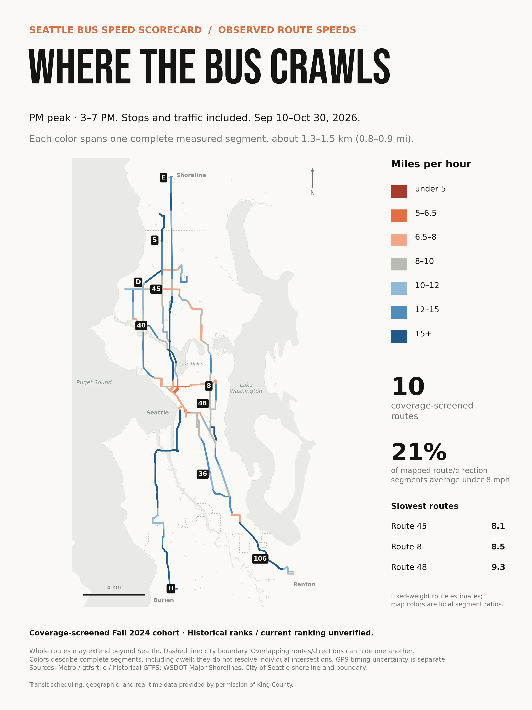

November 2026
How fast is your Seattle bus?
I compare morning, midday, and evening speeds on ten Seattle-serving Metro routes over 37 fall weekdays.
Read the post
November 2026
I compare morning, midday, and evening speeds on ten Seattle-serving Metro routes over 37 fall weekdays.
Read the post